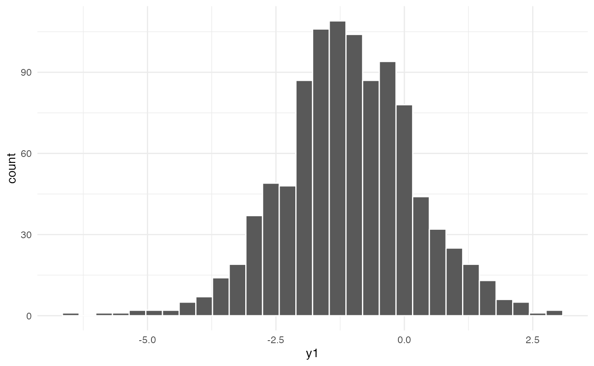

Setting up different types of specifications
Source:vignettes/01-different-specifications.Rmd
01-different-specifications.RmdThe function setup() seems rather simple, but it is in
fact very versatile and allows to incorporate (almost?) any analytic
choice that one might engage in during data analysis. In this vignette,
I am going to exemplify how this function can be used to “create”
several analytical choices.
Different independent and dependent variables
One analytical choice may refer to choosing different independent or dependent variables (e.g., different scales that measure the same construct) or different ways in how these variables are compute (e.g., mean vs. latent measurement, log-transformation, etc).
Simply providing different variable as vectors
In most cases, this simply means adding such variables to the data set and provide them as alternative choices in setup.
# Setup specs
specs <- setup(data = example_data,
x = c("x1", "x2", "x3", "x4"),
y = c("y1", "y2", "y3"),
model = "lm")
# Summary of specifications
summary(specs, rows = 12)## Setup for the Specification Curve Analysis
## -------------------------------------------
## Class: specr.setup -- version: 0.3.0
## Number of specifications: 12
##
## Specifications:
##
## Independent variable: x1, x2, x3, x4
## Dependent variable: y1, y2, y3
## Models: lm
## Covariates: 1 (none)
## Subsets analyses: all
##
## Function used to extract parameters:
##
## function (x)
## broom::tidy(x, conf.int = TRUE)
## <environment: 0x7fdf282d4d48>
##
##
## Head of specifications table (first 12 rows):## # A tibble: 12 × 6
## x y model controls subsets formula
## <chr> <chr> <chr> <chr> <chr> <glue>
## 1 x1 y1 lm 1 all y1 ~ x1 + 1
## 2 x1 y2 lm 1 all y2 ~ x1 + 1
## 3 x1 y3 lm 1 all y3 ~ x1 + 1
## 4 x2 y1 lm 1 all y1 ~ x2 + 1
## 5 x2 y2 lm 1 all y2 ~ x2 + 1
## 6 x2 y3 lm 1 all y3 ~ x2 + 1
## 7 x3 y1 lm 1 all y1 ~ x3 + 1
## 8 x3 y2 lm 1 all y2 ~ x3 + 1
## 9 x3 y3 lm 1 all y3 ~ x3 + 1
## 10 x4 y1 lm 1 all y1 ~ x4 + 1
## 11 x4 y2 lm 1 all y2 ~ x4 + 1
## 12 x4 y3 lm 1 all y3 ~ x4 + 1
# Run analysis and plot results
results <- specr(specs, workers = 1)## Models fitted based on 12 specifications
## Cores used: 1
## 0.156 sec elapsed
head(results$data)## # A tibble: 6 × 26
## x y model controls subsets formula model_function term estimate
## <chr> <chr> <chr> <chr> <chr> <glue> <list> <chr> <dbl>
## 1 x1 y1 lm 1 all y1 ~ x1 + 1 <fn> x1 0.620
## 2 x1 y2 lm 1 all y2 ~ x1 + 1 <fn> x1 -0.328
## 3 x1 y3 lm 1 all y3 ~ x1 + 1 <fn> x1 -0.0821
## 4 x2 y1 lm 1 all y1 ~ x2 + 1 <fn> x2 0.272
## 5 x2 y2 lm 1 all y2 ~ x2 + 1 <fn> x2 -0.102
## 6 x2 y3 lm 1 all y3 ~ x2 + 1 <fn> x2 -0.0735
## # … with 17 more variables: std.error <dbl>, statistic <dbl>, p.value <dbl>,
## # conf.low <dbl>, conf.high <dbl>, fit_r.squared <dbl>,
## # fit_adj.r.squared <dbl>, fit_sigma <dbl>, fit_statistic <dbl>,
## # fit_p.value <dbl>, fit_df <dbl>, fit_logLik <dbl>, fit_AIC <dbl>,
## # fit_BIC <dbl>, fit_deviance <dbl>, fit_df.residual <int>, fit_nobs <int>Specific variable/model combinations
However, in some cases, we may have different type of variables
(e.g., a mean vs. a dichotomous variable). In some cases, for example
when this refers to a dependent variable, such a choice of variables
requires also different model estimation functions. So in our setup, we
want to acknowledge for specific variable/model combinations. In the
following, let’s imagine that next to our standard dependent variables
(y1-y3), we also have a dichotomous item
(y_dich; here only recoded from y1). In this
case, we want to specify and add a custom function - here a logistic
model (glm(formula, data, family = binomial())) - to the
setup.
# Dichotomous dependent variable
data <- example_data %>%
mutate(y_dich = ifelse(y1 > mean(y1), 1, 0))
# Specific function
log_glm <- function(formula, data) {
glm(formula, data, family = binomial())
}
# Setup specs
specs <- setup(data = data,
x = c("x1", "x2"),
y = c("y1", "y2", "y3", "y_dich"),
model = c("lm", "log_glm"))
# Check
specs$specs## # A tibble: 16 × 7
## x y model controls subsets formula model_function
## <chr> <chr> <chr> <chr> <chr> <glue> <list>
## 1 x1 y1 lm 1 all y1 ~ x1 + 1 <fn>
## 2 x1 y1 log_glm 1 all y1 ~ x1 + 1 <fn>
## 3 x1 y2 lm 1 all y2 ~ x1 + 1 <fn>
## 4 x1 y2 log_glm 1 all y2 ~ x1 + 1 <fn>
## 5 x1 y3 lm 1 all y3 ~ x1 + 1 <fn>
## 6 x1 y3 log_glm 1 all y3 ~ x1 + 1 <fn>
## 7 x1 y_dich lm 1 all y_dich ~ x1 + 1 <fn>
## 8 x1 y_dich log_glm 1 all y_dich ~ x1 + 1 <fn>
## 9 x2 y1 lm 1 all y1 ~ x2 + 1 <fn>
## 10 x2 y1 log_glm 1 all y1 ~ x2 + 1 <fn>
## 11 x2 y2 lm 1 all y2 ~ x2 + 1 <fn>
## 12 x2 y2 log_glm 1 all y2 ~ x2 + 1 <fn>
## 13 x2 y3 lm 1 all y3 ~ x2 + 1 <fn>
## 14 x2 y3 log_glm 1 all y3 ~ x2 + 1 <fn>
## 15 x2 y_dich lm 1 all y_dich ~ x2 + 1 <fn>
## 16 x2 y_dich log_glm 1 all y_dich ~ x2 + 1 <fn>As we can see, the setup() function produces all
combinations between the variables and the model functions. This is not
meaningful as the logistic model should only be used if the dependent
variable is y_dich. In comparison to specr version 0.2.1,
this is were the strength of version 0.3.0 comes in. Because we setup
all specifications beforehand, we can simply remove those that we are
not interested in or that we deem non-meaningful. Note: You won’t be
able to filter or subset the sprec.setup object
(essentially a list). Instead, you want to filter/subset the first
position of the list: the data frame that includes the specifications
(here specs$specs or specs[[1]]).
# Filter out models that are not meaningful (here only keep log_glm, when y == "y4")
specs$specs <- specs$specs %>%
filter(!(model == "log_glm" & y != "y_dich")) %>%
filter(!(model == "lm" & y == "y_dich"))
# Check results (only meaningful specifications remain)
summary(specs, rows = 8)## Setup for the Specification Curve Analysis
## -------------------------------------------
## Class: specr.setup -- version: 0.3.0
## Number of specifications: 16
##
## Specifications:
##
## Independent variable: x1, x2
## Dependent variable: y1, y2, y3, y_dich
## Models: lm, log_glm
## Covariates: 1 (none)
## Subsets analyses: all
##
## Function used to extract parameters:
##
## function (x)
## broom::tidy(x, conf.int = TRUE)
## <environment: 0x7fdf25bd57e8>
##
##
## Head of specifications table (first 8 rows):## # A tibble: 8 × 6
## x y model controls subsets formula
## <chr> <chr> <chr> <chr> <chr> <glue>
## 1 x1 y1 lm 1 all y1 ~ x1 + 1
## 2 x1 y2 lm 1 all y2 ~ x1 + 1
## 3 x1 y3 lm 1 all y3 ~ x1 + 1
## 4 x1 y_dich log_glm 1 all y_dich ~ x1 + 1
## 5 x2 y1 lm 1 all y1 ~ x2 + 1
## 6 x2 y2 lm 1 all y2 ~ x2 + 1
## 7 x2 y3 lm 1 all y3 ~ x2 + 1
## 8 x2 y_dich log_glm 1 all y_dich ~ x2 + 1
# Run analysis and plot results
results <- specr(specs, workers = 1)## Models fitted based on 8 specifications
## Cores used: 1
## 0.162 sec elapsed
head(results$data)## # A tibble: 6 × 28
## x y model controls subsets formula model_function term estimate
## <chr> <chr> <chr> <chr> <chr> <glue> <list> <chr> <dbl>
## 1 x1 y1 lm 1 all y1 ~ x1 +… <fn> x1 0.620
## 2 x1 y2 lm 1 all y2 ~ x1 +… <fn> x1 -0.328
## 3 x1 y3 lm 1 all y3 ~ x1 +… <fn> x1 -0.0821
## 4 x1 y_dich log_glm 1 all y_dich ~ … <fn> x1 0.753
## 5 x2 y1 lm 1 all y1 ~ x2 +… <fn> x2 0.272
## 6 x2 y2 lm 1 all y2 ~ x2 +… <fn> x2 -0.102
## # … with 19 more variables: std.error <dbl>, statistic <dbl>, p.value <dbl>,
## # conf.low <dbl>, conf.high <dbl>, fit_r.squared <dbl>,
## # fit_adj.r.squared <dbl>, fit_sigma <dbl>, fit_statistic <dbl>,
## # fit_p.value <dbl>, fit_df <dbl>, fit_logLik <dbl>, fit_AIC <dbl>,
## # fit_BIC <dbl>, fit_deviance <dbl>, fit_df.residual <int>, fit_nobs <int>,
## # fit_null.deviance <dbl>, fit_df.null <int>Adding composite and latent variables
In some cases, we may want to add mean indices or even latent
measurement models of our variables of interest to explore how latent
vs. manifest measurement affects our results. This requires a bit more
upfront work as we need to work with lavaan for the latent
measurement. Furthermore, we need to adjust the extract functions
(fun1 and fun2 in setup()) so
that the extraction of parameters aligns across different type of
models. The beauty of broom::tidy() and
broom::glance() (which are used by default) is that they
adapt to the different model types that are passed to
setup. Although the same parameters are extracted for most
models, they sometimes differ for specific models (e.g., structural
equation models resulting from lavaan::sem()). This means
we need to adjust them to extract the same parameters across different
models.
# Add mean (one choice)
data <- data %>%
rowwise %>%
mutate(x_mean = mean(x1, x2, x3, x4)) %>%
ungroup
# Add custom function with latent measurement models to pass to "models" (another choice)
custom_sem <- function(formula, data) {
# Make sure lavaan is loaded
require(lavaan)
# Add latent measurement as list
latent <- list(latent_x12 = "latent_x12 =~ x1 + x2")
# Remove +1 from formula as lavaan doesn't know how to process it
semformula <- str_remove_all(formula, "\\+ 1")
# remove non-used latent measurement models from list by checking the formula
valid <- purrr::keep(names(latent), ~ stringr::str_detect(formula, .x))
# Create new formula that includes latent measurement models
formula <- paste(formula, "\n", paste(latent[valid], collapse = " \n "))
# Pass formula to `sem()`
sem(formula, data)
}
# Create custom tidy function that extracts the same parameters from different models!
tidy_new <- function(x) {
if(class(x) == "lavaan") {
broom::tidy(x, conf.int = TRUE) %>%
select(term, estimate, conf.low, conf.high) %>% # select parameters you want to keep
filter(grepl(" ~ ", term)) %>% # term needs to be adjusted
separate(term, c("dv", "term"), sep = " ~ ") %>% # extract independent variable
select(-dv) # remove dependent variable
} else {
broom::tidy(x, conf.int = TRUE) %>%
select(term, estimate, conf.low, conf.high) # same parameters as above
}
}
# Setup specs with new custom function
specs <- setup(data = data,
x = c("x1", "x2", "x3", "x4", "x_mean", "latent_x12"),
y = c("y1", "y2"),
model = c("lm", "custom_sem"),
fun1 = tidy_new, # We pass the new extract function
fun2 = NULL) # switch off "glance" as it produces different fit indices and wouldn't work
# Quick check (still includes non-meaningful specifications)
summary(specs, rows = 12)## Setup for the Specification Curve Analysis
## -------------------------------------------
## Class: specr.setup -- version: 0.3.0
## Number of specifications: 24
##
## Specifications:
##
## Independent variable: x1, x2, x3, x4, x_mean, latent_x12
## Dependent variable: y1, y2
## Models: lm, custom_sem
## Covariates: 1 (none)
## Subsets analyses: all
##
## Function used to extract parameters:
##
## function(x) {
## if(class(x) == "lavaan") {
## broom::tidy(x, conf.int = TRUE) %>%
## select(term, estimate, conf.low, conf.high) %>% # select parameters you want to keep
## filter(grepl(" ~ ", term)) %>% # term needs to be adjusted
## separate(term, c("dv", "term"), sep = " ~ ") %>% # extract independent variable
## select(-dv) # remove dependent variable
## } else {
## broom::tidy(x, conf.int = TRUE) %>%
## select(term, estimate, conf.low, conf.high) # same parameters as above
## }
## }
##
##
## Head of specifications table (first 12 rows):## # A tibble: 12 × 6
## x y model controls subsets formula
## <chr> <chr> <chr> <chr> <chr> <glue>
## 1 x1 y1 lm 1 all y1 ~ x1 + 1
## 2 x1 y1 custom_sem 1 all y1 ~ x1 + 1
## 3 x1 y2 lm 1 all y2 ~ x1 + 1
## 4 x1 y2 custom_sem 1 all y2 ~ x1 + 1
## 5 x2 y1 lm 1 all y1 ~ x2 + 1
## 6 x2 y1 custom_sem 1 all y1 ~ x2 + 1
## 7 x2 y2 lm 1 all y2 ~ x2 + 1
## 8 x2 y2 custom_sem 1 all y2 ~ x2 + 1
## 9 x3 y1 lm 1 all y1 ~ x3 + 1
## 10 x3 y1 custom_sem 1 all y1 ~ x3 + 1
## 11 x3 y2 lm 1 all y2 ~ x3 + 1
## 12 x3 y2 custom_sem 1 all y2 ~ x3 + 1
# Filter out non-meaningful specifications
specs$specs <- specs$specs %>%
filter(!(model == "custom_sem" & !grepl("latent", x))) %>%
filter(!(model == "lm" & grepl("latent", x)))
# Check again
summary(specs, rows = 12)## Setup for the Specification Curve Analysis
## -------------------------------------------
## Class: specr.setup -- version: 0.3.0
## Number of specifications: 24
##
## Specifications:
##
## Independent variable: x1, x2, x3, x4, x_mean, latent_x12
## Dependent variable: y1, y2
## Models: lm, custom_sem
## Covariates: 1 (none)
## Subsets analyses: all
##
## Function used to extract parameters:
##
## function(x) {
## if(class(x) == "lavaan") {
## broom::tidy(x, conf.int = TRUE) %>%
## select(term, estimate, conf.low, conf.high) %>% # select parameters you want to keep
## filter(grepl(" ~ ", term)) %>% # term needs to be adjusted
## separate(term, c("dv", "term"), sep = " ~ ") %>% # extract independent variable
## select(-dv) # remove dependent variable
## } else {
## broom::tidy(x, conf.int = TRUE) %>%
## select(term, estimate, conf.low, conf.high) # same parameters as above
## }
## }
##
##
## Head of specifications table (first 12 rows):## # A tibble: 12 × 6
## x y model controls subsets formula
## <chr> <chr> <chr> <chr> <chr> <glue>
## 1 x1 y1 lm 1 all y1 ~ x1 + 1
## 2 x1 y2 lm 1 all y2 ~ x1 + 1
## 3 x2 y1 lm 1 all y1 ~ x2 + 1
## 4 x2 y2 lm 1 all y2 ~ x2 + 1
## 5 x3 y1 lm 1 all y1 ~ x3 + 1
## 6 x3 y2 lm 1 all y2 ~ x3 + 1
## 7 x4 y1 lm 1 all y1 ~ x4 + 1
## 8 x4 y2 lm 1 all y2 ~ x4 + 1
## 9 x_mean y1 lm 1 all y1 ~ x_mean + 1
## 10 x_mean y2 lm 1 all y2 ~ x_mean + 1
## 11 latent_x12 y1 custom_sem 1 all y1 ~ latent_x12 + 1
## 12 latent_x12 y2 custom_sem 1 all y2 ~ latent_x12 + 1
# Run analysis and plot results
results <- specr(specs, workers = 1)## Loading required package: lavaan## This is lavaan 0.6-11
## lavaan is FREE software! Please report any bugs.## Warning in lav_object_post_check(object): lavaan WARNING: some estimated ov
## variances are negative
## Warning in lav_object_post_check(object): lavaan WARNING: some estimated ov
## variances are negative## Models fitted based on 12 specifications
## Cores used: 1
## 0.535 sec elapsed
As we can see, we can now investigate the manifest and latent measures next to the individual items.
Control variables
Another analytical choice may refer to the inclusion of covariates.
Here, the setup() function is again very versatile and
allows to include different combinations of covariates.
Adding a bunch of control variables
By providing just a vector of covariates, setup()
produces all combinations of these covariates plus a specification
without any covariates. If we add the argument
simplify = TRUE, not all combinations between covariates
are created. Instead, only no covariates, each individually, and all
together are included.
# Setup specification that include all combinations of covariates
specs1 <- setup(data = example_data,
x = c("x1", "x2"),
y = c("y1", "y2"),
model = "lm",
controls = c("c1", "c2", "c3", "c4")) # simply providing a vector of control variables
# Setup secifications that include only no covariates, each individually, and all together
specs2 <- setup(data = example_data,
x = c("x1", "x2"),
y = c("y1", "y2"),
model = "lm",
controls = c("c1", "c2", "c3", "c4"),
simplify = TRUE) # Difference to specs1!
# Check
distinct(specs1$specs, controls)## # A tibble: 16 × 1
## controls
## <chr>
## 1 1
## 2 c1
## 3 c2
## 4 c3
## 5 c4
## 6 c1 + c2
## 7 c1 + c3
## 8 c1 + c4
## 9 c2 + c3
## 10 c2 + c4
## 11 c3 + c4
## 12 c1 + c2 + c3
## 13 c1 + c2 + c4
## 14 c1 + c3 + c4
## 15 c2 + c3 + c4
## 16 c1 + c2 + c3 + c4
distinct(specs2$specs, controls)## # A tibble: 6 × 1
## controls
## <chr>
## 1 1
## 2 c1
## 3 c2
## 4 c3
## 5 c4
## 6 c1 + c2 + c3 + c4Sets of covariates
We can also add groups of covariates. The way setup creates combinations between such groups remains the same.
# Add groups of covariates
specs3 <- setup(data = example_data,
x = c("x1", "x2"),
y = c("y1", "y2"),
model = "lm",
controls = c("c1 + c2", "c3 + c4"))
# Check
distinct(specs3$specs, controls)## # A tibble: 4 × 1
## controls
## <chr>
## 1 1
## 2 c1 + c2
## 3 c3 + c4
## 4 c1 + c2 + c3 + c4The setup() function further has an argument
add_to_formula, which allows to add covariates (or any
other formula-relevant aspects, e.g., random effect structures) to all
model functions.
# Add some control variables to all models
specs4 <- setup(data = example_data,
x = c("x1", "x2"),
y = c("y1", "y2"),
model = "lm",
controls = c("c1", "c2"),
add_to_formula = "c3")
# Check (see how `c3` is added to each formula, but is not part of controls)
specs4$specs[1:4,]## # A tibble: 4 × 7
## x y model controls subsets formula model_function
## <chr> <chr> <chr> <chr> <chr> <glue> <list>
## 1 x1 y1 lm 1 all y1 ~ x1 + 1 + c3 <fn>
## 2 x1 y1 lm c1 all y1 ~ x1 + c1 + c3 <fn>
## 3 x1 y1 lm c2 all y1 ~ x1 + c2 + c3 <fn>
## 4 x1 y1 lm c1 + c2 all y1 ~ x1 + c1 + c2 + c3 <fn>Dealing with duplicates in specifications
Finally, we may sometimes decide to add one of the independent or
dependent variables as covariates as well. In this case, it would not
make sense to add e.g., x1 as covariate if it is already
the independent variable. In this new version of specr, the
setup() function automatically detects such duplications
and deletes such specifications.
# Adding a covariate that is also a independent or dependent variable
specs5 <- setup(data = example_data,
x = c("x1", "x2"),
y = c("y1", "y2"),
model = "lm",
controls = c("x1", "y1"))
# Check (see how only 9 specifications are kept)
specs5$specs## # A tibble: 9 × 7
## x y model controls subsets formula model_function
## <chr> <chr> <chr> <chr> <chr> <glue> <list>
## 1 x1 y1 lm 1 all y1 ~ x1 + 1 <fn>
## 2 x1 y2 lm 1 all y2 ~ x1 + 1 <fn>
## 3 x1 y2 lm y1 all y2 ~ x1 + y1 <fn>
## 4 x2 y1 lm 1 all y1 ~ x2 + 1 <fn>
## 5 x2 y1 lm x1 all y1 ~ x2 + x1 <fn>
## 6 x2 y2 lm 1 all y2 ~ x2 + 1 <fn>
## 7 x2 y2 lm x1 all y2 ~ x2 + x1 <fn>
## 8 x2 y2 lm y1 all y2 ~ x2 + y1 <fn>
## 9 x2 y2 lm x1 + y1 all y2 ~ x2 + x1 + y1 <fn>Subset analyses
One of the most powerful arguments within the setup()
framework is the ... (dot dot dot), which can be used for
so-called “subset analyses”. With this argument, a variety of analytical
choices can be included.
Simple subset analysis based on grouping variables
In simple cases, we may want to investigate whether a relationship
differs across certain subgroups. In the example data, we can for
example investigate whether the relationship between x and
y differs across age groups (group1) and
gender (group2). We need to add them at the position of the
... using the following syntax:
distinct(data, variable)
The function distinct() extracts all distinct values of
the grouping variable and then passes these as combinatorial factors to
the expand function within setup(). If two or more grouping
variables are provided in this way (you can provide as many as you want,
but it quickly becomes messy), setup() automatically adds
them as “choice” columns to the specification setup data frame. Note how
it automatically adds the value NA to make sure that also
the simple subsets and not only the combinations between the two groups
are included in the specifications. It further creates a new column
“subsets”, which represents the combination of the subsetting
factors.
# Setup specifications
specs <- setup(data = example_data,
x = c("x1", "x2"),
y = c("y1", "y2"),
model = c("lm"),
distinct(example_data, group1),
distinct(example_data, group2))
# Summary of specifications
summary(specs)## Setup for the Specification Curve Analysis
## -------------------------------------------
## Class: specr.setup -- version: 0.3.0
## Number of specifications: 48
##
## Specifications:
##
## Independent variable: x1, x2
## Dependent variable: y1, y2
## Models: lm
## Covariates: 1 (none)
## Subsets analyses: middle & female, old & female, young & female, female, middle & male, old & male, young & male, male, middle, old, young, all
##
## Function used to extract parameters:
##
## function (x)
## broom::tidy(x, conf.int = TRUE)
## <environment: 0x7fdf410d1698>
##
##
## Head of specifications table (first 6 rows):## # A tibble: 6 × 8
## x y model controls subsets group1 group2 formula
## <chr> <chr> <chr> <chr> <chr> <fct> <fct> <glue>
## 1 x1 y1 lm 1 middle & female middle female y1 ~ x1 + 1
## 2 x1 y1 lm 1 old & female old female y1 ~ x1 + 1
## 3 x1 y1 lm 1 young & female young female y1 ~ x1 + 1
## 4 x1 y1 lm 1 female NA female y1 ~ x1 + 1
## 5 x1 y1 lm 1 middle & male middle male y1 ~ x1 + 1
## 6 x1 y1 lm 1 old & male old male y1 ~ x1 + 1
# Check subsets (in this case, 12 different types of subset analysis,
# including using "all" subjects)
distinct(specs$specs, subsets)## # A tibble: 12 × 1
## subsets
## <chr>
## 1 middle & female
## 2 old & female
## 3 young & female
## 4 female
## 5 middle & male
## 6 old & male
## 7 young & male
## 8 male
## 9 middle
## 10 old
## 11 young
## 12 all
# Run analysis and plot results
results <- specr(specs, workers = 1)## Models fitted based on 48 specifications
## Cores used: 1
## 0.662 sec elapsed
More complex analysis using the subsets functionality
The true potential of this type of subsetting can only be grapsed with another example. Let’s imagine we want to include the removal of outliers as an analytical choice in our specification curve analysis. Perhaps we are unsure about the cut-off value and want to investigate different (arbitrary) ones. This can again be seen as a subset analysis.
We first create variables that denote who is an outlier and who is
not according to the rule we want to use. We then pass these variables
as subsets to the setup() function. This again produces
non-meaningful specifications (e.g., a subset that includes outliers, a
subset that includes people who align with different outlier rules,
etc.). So we want to keep only the meaningful specifications. In this
case, these are just 7 different types of specifications.
# Check for outliers in `y1` (should of course be more elaborate than eye-balling)
ggplot(data, aes(x = y1)) +
geom_histogram(color = "white") +
theme_minimal()## `stat_bin()` using `bins = 30`. Pick better value with `binwidth`.
# Create variables that denote outliers (here with a range of arbitrary thresholds)
data <- data %>%
mutate(outlier1 = ifelse(y1 < mean(y1) - 2*sd(y1) | y1 > mean(y1) + 2*sd(y1), "outlier", "2.0*SD"),
outlier2 = ifelse(y1 < mean(y1) - 2.1*sd(y1) | y1 > mean(y1) + 2.1*sd(y1), "outlier", "2.1*SD"),
outlier3 = ifelse(y1 < mean(y1) - 2.2*sd(y1) | y1 > mean(y1) + 2.2*sd(y1), "outlier", "2.2*SD"),
outlier4 = ifelse(y1 < mean(y1) - 2.3*sd(y1) | y1 > mean(y1) + 2.3*sd(y1), "outlier", "2.3*SD"),
outlier5 = ifelse(y1 < mean(y1) - 2.4*sd(y1) | y1 > mean(y1) + 2.4*sd(y1), "outlier", "2.4*SD"),
outlier6 = ifelse(y1 < mean(y1) - 2.5*sd(y1) | y1 > mean(y1) + 2.5*sd(y1), "outlier", "2.5*SD"))
# Setup specs
specs <- setup(data = data,
x = c("x1", "x2"),
y = c("y1", "y2"),
model = "lm",
distinct(data, outlier1),
distinct(data, outlier2),
distinct(data, outlier3),
distinct(data, outlier4),
distinct(data, outlier5),
distinct(data, outlier6),
controls = c("c1", "c2"))
# Remove unnecessary combinations
specs$specs <- specs$specs %>%
filter(subsets == "2.0*SD" | subsets == "2.1*SD" |
subsets == "2.2*SD" | subsets == "2.3*SD" |
subsets == "2.4*SD" | subsets == "2.5*SD" |
subsets == "all")
# Check specifications (see how it contains only meaningful subsets?)
summary(specs, rows = 7)## Setup for the Specification Curve Analysis
## -------------------------------------------
## Class: specr.setup -- version: 0.3.0
## Number of specifications: 11664
##
## Specifications:
##
## Independent variable: x1, x2
## Dependent variable: y1, y2
## Models: lm
## Covariates: 1 (none), c1, c2, c1 + c2
## Subsets analyses: 2.5*SD, 2.4*SD, 2.3*SD, 2.2*SD, 2.1*SD, 2.0*SD, all
##
## Function used to extract parameters:
##
## function (x)
## broom::tidy(x, conf.int = TRUE)
## <environment: 0x7fdf3fa3c4f8>
##
##
## Head of specifications table (first 7 rows):## # A tibble: 7 × 12
## x y model controls subsets outlier1 outlier2 outlier3 outlier4
## <chr> <chr> <chr> <chr> <chr> <fct> <fct> <fct> <fct>
## 1 x1 y1 lm 1 2.5*SD NA NA NA NA
## 2 x1 y1 lm 1 2.4*SD NA NA NA NA
## 3 x1 y1 lm 1 2.3*SD NA NA NA 2.3*SD
## 4 x1 y1 lm 1 2.2*SD NA NA 2.2*SD NA
## 5 x1 y1 lm 1 2.1*SD NA 2.1*SD NA NA
## 6 x1 y1 lm 1 2.0*SD 2.0*SD NA NA NA
## 7 x1 y1 lm 1 all NA NA NA NA
## # … with 3 more variables: outlier5 <fct>, outlier6 <fct>, formula <glue>
# Run analysis and plot results
results <- specr(specs, workers = 1)## Models fitted based on 112 specifications
## Cores used: 1
## 2.147 sec elapsed
There are of course many more types of analytical decisions. For some more examples, see some of the other vignettes. If you have a specific type of analytical decision that you don’t know how to include, feel free to open an issue on github.